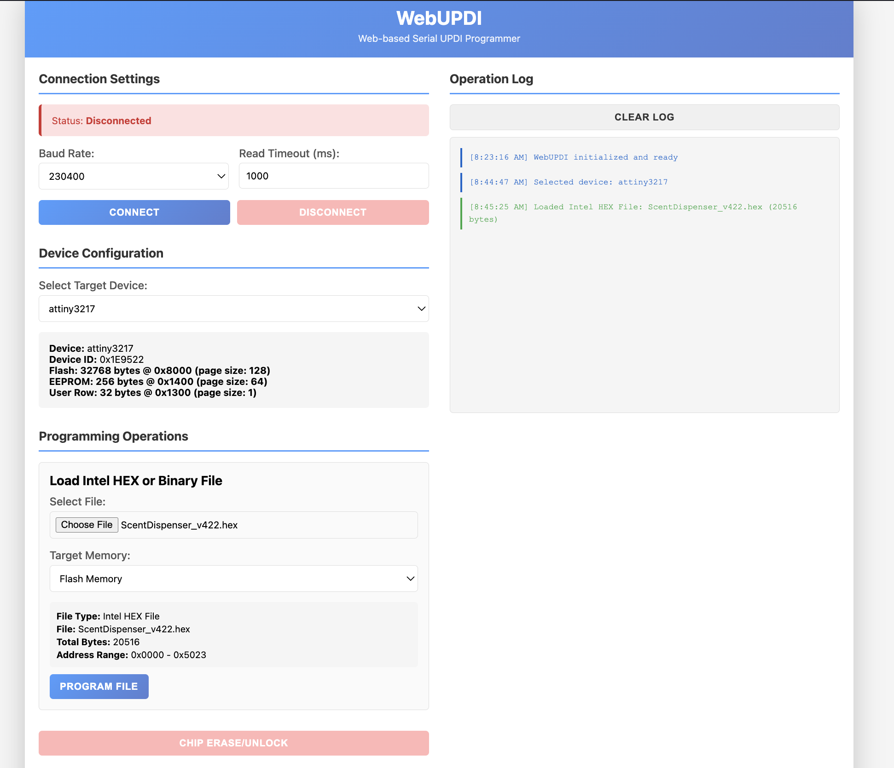

With the UPDI programmer connected (Step 1 above), click Connect. Select the CH340 / USB Serial port from the browser dialog when prompted.
Under Device Configuration, select attiny3217 from the dropdown. Device memory details will appear confirming the selection.
Under Programming Operations, click Choose File and select your .hex firmware file. Confirm Target Memory is set to Flash Memory.
Click Program File. The operation log on the right will show progress and confirm when complete.

When flashing multiple PCBs:
Always click Disconnect before unplugging the programmer. Simply unplugging without
disconnecting can cause connection issues with the next board and may require unplugging
and re-plugging the USB cable.
There is also a known bug: after flashing one board and connecting the next, you may see
a "No file loaded" error. To fix it, click Choose File, select any file,
then immediately choose the correct .hex file again. This reloads it properly.
Windows Users — USB Drivers
Windows requires drivers to communicate with the USB devices. These are installed once
and do not need to be reinstalled. Administrator access is required to install.
If you lack admin rights, ask your IT department.
If you are unsure whether drivers are installed, connect the device and check
Device Manager for any yellow warning icons. Try unplugging and re-plugging
the USB cable after installing a driver.